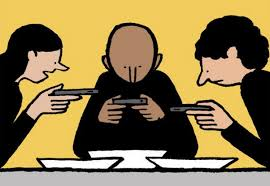

Project philosophy, technology and English
QUESTIONS PHILOSOPHY

Should we have an opinion, a belief or knowledge about limits of technology? Why?
About the limits of technology, we should have a knowledge, because if we have an opinion or a belief we could be wrong and we could start to depend on our devices.
Also if we have a knowledge we will be sure about our limits and the limits that we have to take from technology, to stay healthy physical and emotionally.
Do you think that technology improves or inhibits our knowledge tools and skills? Why?
Also if we have a knowledge we will be sure about our limits and the limits that we have to take from technology, to stay healthy physical and emotionally.
I think that technology helps us in most of our daily life activities and improves our skills and efficiency on it. It also helps us to do hard works easily and in short time.
But we also know that the technology makes us lazy and dependent of it, like in the situations that were shown on the episode of Black Mirror. We say that technology inhibits our creativity
and sometimes urges us to discriminate people only for things that we have done on our social media. A clear example of what happened on the Black Mirror episode in which everyone was discriminated only for "Stars" that were set by people that don't even know you.
VIDEO
Symbol

Image found in http://www.postureoespanol.es
in which everyone depends socially and emotionally from their devices because the world was morally structured from that.
HTML Comment Box is loading comments...